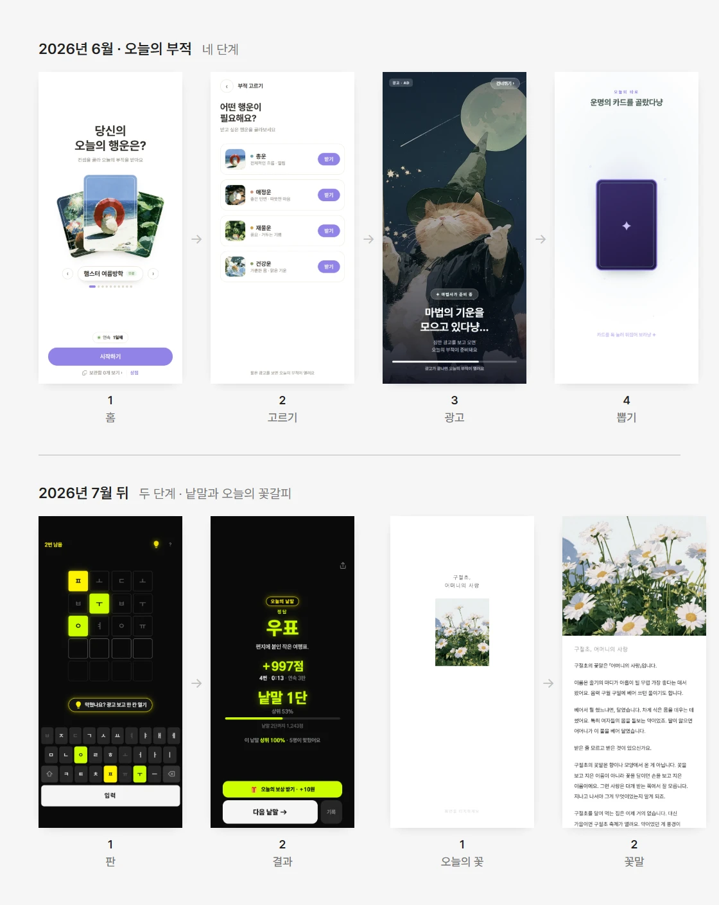
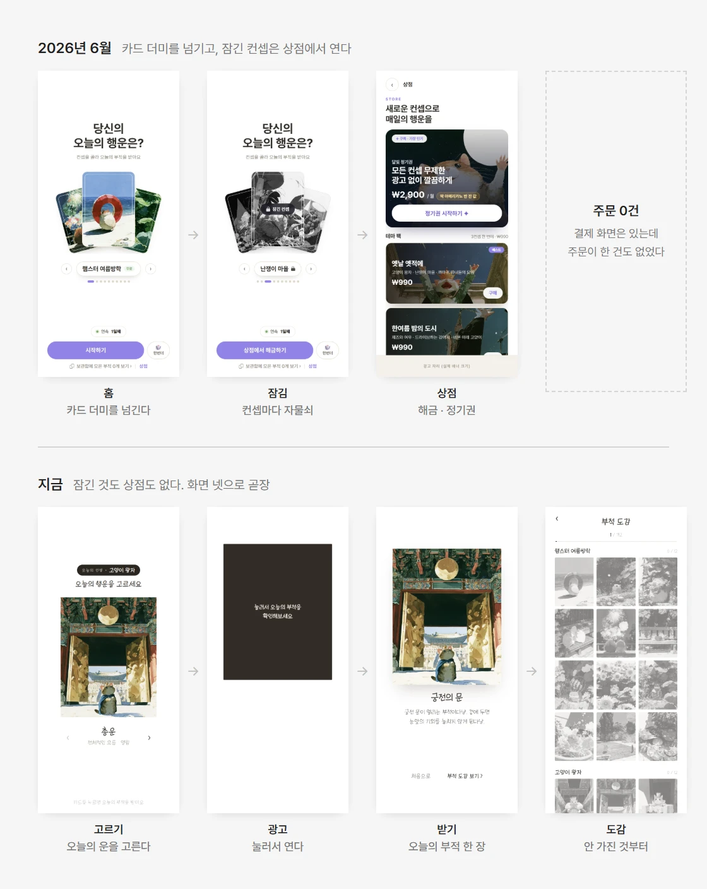
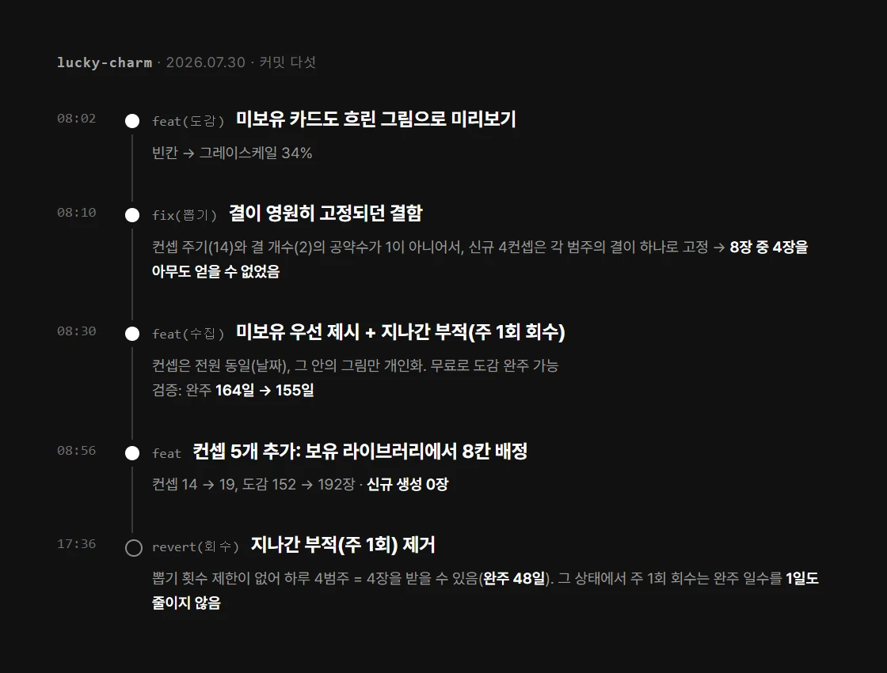
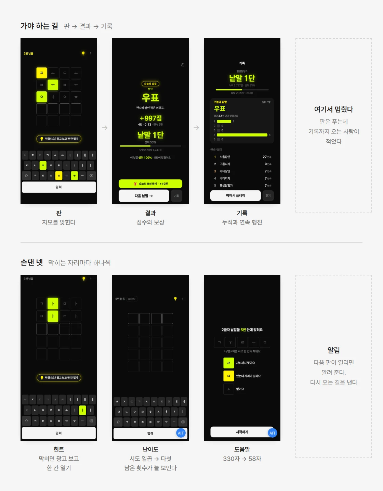

낸 뒤에 잰 숫자로 다음 앱을 다시 설계하기
앱을 낸 뒤에 잰 숫자가 다음 앱을 바꿨어요. 앱 전체의 흐름, 한 앱의 화면, 게임의 규칙. 이렇게 세 겹에서 무엇을 보고 무엇을 고쳤는지 이야기해 보려고 해요.

위는 6월에 낸 부적의 네 단계, 아래는 7월 뒤에 낸 앱들의 흐름이에요
첫 앱 둘은 공을 많이 들였어요. 운을 고르고, 의식을 보고, 부적을 받고, 도감에 넣기까지 네댓 단계를 거쳤죠.
그런데 내고 나서 리텐션을 보니 뚜렷하게 남는 사람이 없었어요. 왜 그런지 정리해 보니 두 가지였어요. 하나는 서비스 크기에 비해 화면이 무거웠다는 것, 다른 하나는 친구에게 보낼 자리가 약했다는 거예요. 미니앱은 공유로 자라는데 말이죠.
그래서 7월부터는 흐름을 한두 단계로 줄이고, 공유를 가운데 뒀어요. 뒤로 갈수록 더 가볍게 갔고, 글 중심의 모노 여섯과 30초 에세이까지 왔어요. 앱 전체의 흐름을 줄이고 나니, 이번에는 한 앱 안을 들여다볼 차례였어요.
부적의 첫 판에는 홈, 운 뽑기, 상점, 구독까지 다 있었어요. 카드를 부채꼴로 펼치고, 그 아래 큰 보라 단추를 눌러 시작했죠.
그런데 결제 주문은 0건이었어요.
그래서 결제와 상점을 지우고 화면을 넷으로 줄였어요. 운을 옆으로 넘겨 고르고, 광고를 보고, 부적을 받으면, 도감에 쌓이는 흐름이에요. 지난 부적을 유료로 파는 기능도 검토했지만, 만들기 전에 계산으로 따져 보고 접었어요.
남은 건 도감이었어요. 끝까지 채울 수 있는지 직접 계산해 봤더니, 한 범주만 고르는 사람은 152장 가운데 38장에서 멈추더라고요. 그래서 그날 아침, 아직 안 가진 그림을 먼저 주도록 고쳤어요. 완주까지 걸리는 날이 164일에서 155일로 줄었어요.
같은 날 아침에는 지나간 부적을 주 1회 돌려주는 기능도 넣었어요. 그런데 저녁에 다시 계산해 보니, 뽑기 횟수에 제한이 없어 하루 네 장까지 받을 수 있었어요. 그 상태에서는 주 1회 회수가 완주를 하루도 앞당기지 못하더라고요. 그래서 그날 저녁에 되돌렸어요. 아래 커밋 기록에 그 하루가 그대로 남아 있어요.

위가 첫 판, 아래가 지금이에요. 잠긴 컨셉과 상점이 사라지고 화면이 넷으로 줄었어요. 세 앱을 기획한 이야기는 부적에 적었어요

도감이 막히는 걸 찾은 날의 커밋이에요. 계산과 뒤집은 판정이 같이 적혀 있어요
낱말에서는 문제가 다른 곳에 있었어요. 사람들이 들어와서 판은 푸는데, 마지막 기록 화면까지 오는 사람이 적었거든요. 혜택탭 카드를 누르고 들어온 사람 가운데 정답까지 간 사람은 1%였어요.
처음에는 판이 어려워서라고 봤어요. 그래서 쉽게 만들었는데, 숫자가 움직이지 않았어요.
못 푸는 게 아니라, 끝까지 가는 길이 끊겨 있었어요.
힌트만 해도 오른쪽 위 작은 아이콘 하나뿐이라, 있는 줄도 모르고 나가기 쉬웠어요. 그래서 그 길을 끝까지 가게 하는 장치 넷을 손봤어요. 먼저 막히면 광고를 보고 한 칸을 여는 힌트를 판 바로 아래에 넣었어요. 시도는 일곱 번에서 다섯 번으로 줄이고, 도움말은 330자에서 58자로 깎아 난이도를 낮췄고요. 다음 판이 열리면 알려 주는 알림을 붙이고, 마지막 기록 화면도 다시 짰어요.
보상 금액과 카드 문구와 들어오는 길은 그대로 두고 앱만 바꿨어요. 그 뒤 여섯 주 동안, 같은 자로 다시 재니 정답까지 간 사람은 4.6%였어요. 8월 말과 9월로 나눠 봐도 둘 다 4%를 넘었고요. 아직 표본이 작아서, 이 숫자는 방향으로만 보고 있어요.

위는 가야 하는 길, 아래는 그 길까지 데려오려고 손댄 넷이에요. 낱말 하나만 처음부터 끝까지 본 기록은 낱말 케이스에 적었어요
세 번 모두, 처음 세운 진단이 그대로 맞지는 않았어요. 첫 앱은 공을 들였지만 남지 않았고, 낱말은 쉽게 만들어도 숫자가 움직이지 않았고, 부적의 회수 기능은 완주를 하루도 앞당기지 못했어요.
그래서 이제는 고치기 전에 먼저 재고, 고친 뒤에는 같은 자로 다시 재요. 낱말의 1%와 4.6%를 나란히 놓을 수 있는 것도, 금액과 문구와 들어오는 길을 그대로 둔 채 앱만 바꿨기 때문이에요.